สวัสดีครับชาว Minecraft ทุกคน! หากคุณกำลังมองหาวิธีเปิดเซิร์ฟเวอร์ Minecraft Java Edition เพื่อเล่นกับเพื่อนในปี 2026 บทความนี้คือคู่มือทีละขั้นตอน — ใช้ PaperMC บน Windows (เหมาะกับมือใหม่และรองรับ Plugin)
สรุปสั้นๆ ก่อนเริ่ม
run.bat → ยอมรับ eula.txt → ตั้งค่า server.propertieslocalhost → ให้เพื่อนนอกบ้านเข้าเล่นต่อด้วย คู่มือ ngrokอ่านประมาณ 15 นาที · เน้นเล่นกับเพื่อน 2–10 คน
ติดตั้ง Java ก่อนรันเซิร์ฟ
PaperMC ต้องใช้ Java (JDK) — เวอร์ชัน Java ขึ้นกับเวอร์ชัน Paper/Minecraft ที่คุณดาวน์โหลด ไม่ใช่ติด Java ตัวเดียวใช้ได้ทุกเวอร์ชัน ดูตารางด้านล่างหรือหน้า PaperMC Getting started (อัปเดตล่าสุดจากทางการ)
ดาวน์โหลด JDK ได้ที่ Adoptium — ติดตั้งแล้วเปิด Command Prompt พิมพ์ java -version ตรวจว่าเวอร์ชันตรงกับ Paper ที่เลือก
ก่อนลงมือเปิดเซิร์ฟ ตรวจสอบสเปคเครื่อง พื้นที่ว่าง และ เวอร์ชัน Java ให้ตรงกับ Paper — ยิ่งมีผู้เล่นมากหรือใช้ Plugin มาก ยิ่งต้องการ RAM และ CPU สูงขึ้น
เลือกคอลัมน์ Paper Version ให้ตรงกับ build ที่ดาวน์โหลดจาก papermc.io แล้วติดตั้ง Recommended Java Version คู่กัน
| Paper Version | Recommended Java Version |
|---|---|
| 1.7.10 ถึง 1.11 | Java 8 |
| 1.12 ถึง 1.16.4 | Java 11 |
| 1.16.5 | Java 16 |
| 1.17 ถึง 1.19 | Java 17 |
| 1.20 ถึง 1.21.11 | Java 21 |
| 26.1 ขึ้นไป | Java 25 |
สำหรับมือใหม่ในปี 2026: ถ้าเลือก Paper เวอร์ชันเกมรุ่น 1.20–1.21 มักใช้ Java 21 ถ้าเลือก Paper รุ่นใหม่ (26.1+) ต้องใช้ Java 25 — ถ้า run.bat รันแล้วขึ้น error เรื่อง Java ให้เช็คตารางนี้ก่อน
| องค์ประกอบ | ขั้นต่ำ (เพื่อน ≤5 คน) | แนะนำ (5–10 คน / มี Plugin) |
|---|---|---|
| CPU | 2 Core ~2.5 GHz+ | 4 Core ~3.0 GHz+ |
| RAM | 2 GB (จัดสรรให้เซิร์ฟ) | 4 GB ขึ้นไป |
| Storage | ~20 GB (แนะนำ SSD) | 50 GB+ ถ้าโลกใหญ่ / Plugin เยอะ |
Vanilla คือตัวเกมต้นฉบับจาก Mojang — ตั้งค่าน้อยแต่ปรับแต่งจำกัด Spigot/Paper รองรับ Plugin เหมาะเซิร์ฟชุมชน — บทความนี้ใช้ PaperMC เพราะเสถียรและลด Lag ได้ดีกว่า Spigot
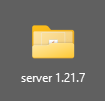
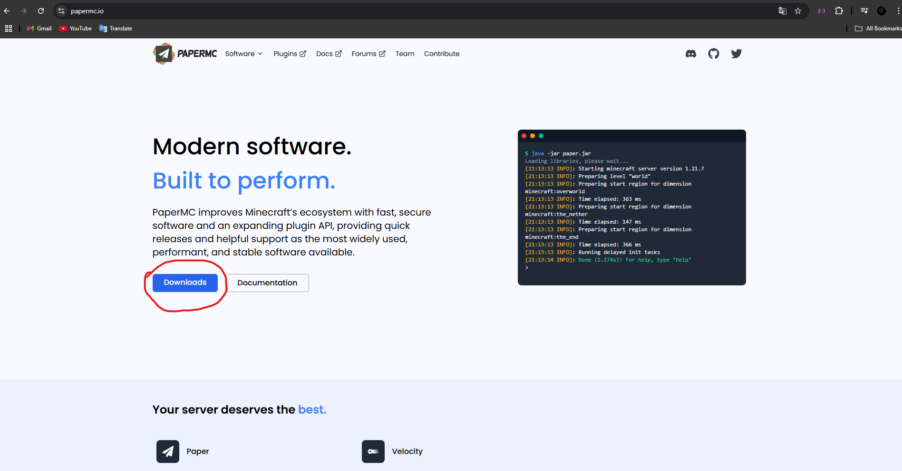
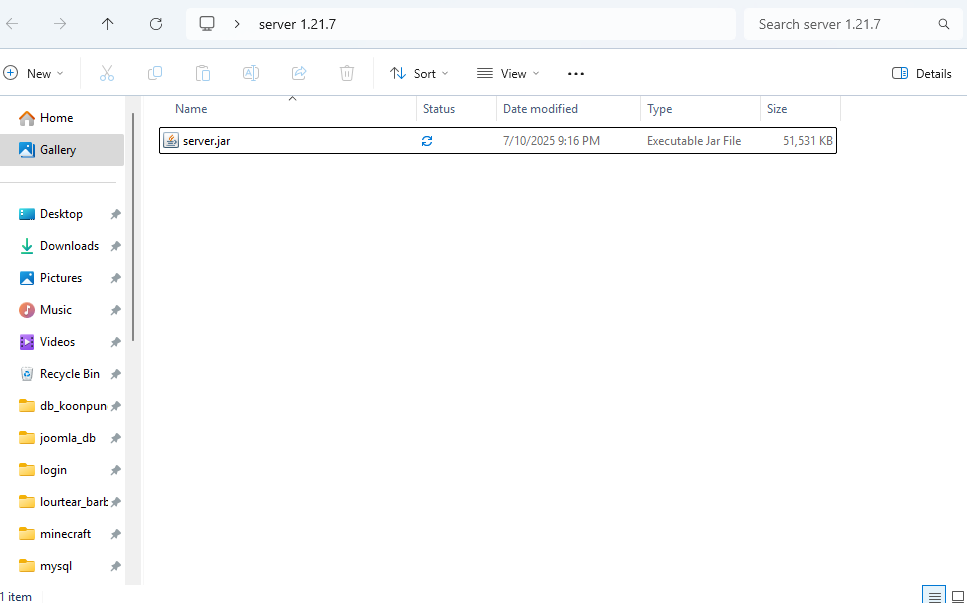
java -Xms2G -Xmx2G -jar server.jar --nogui
pauseปรับ -Xms และ -Xmx ตาม RAM ที่จัดให้เซิร์ฟ (เครื่อง 8 GB มักใช้ 2G–4G)
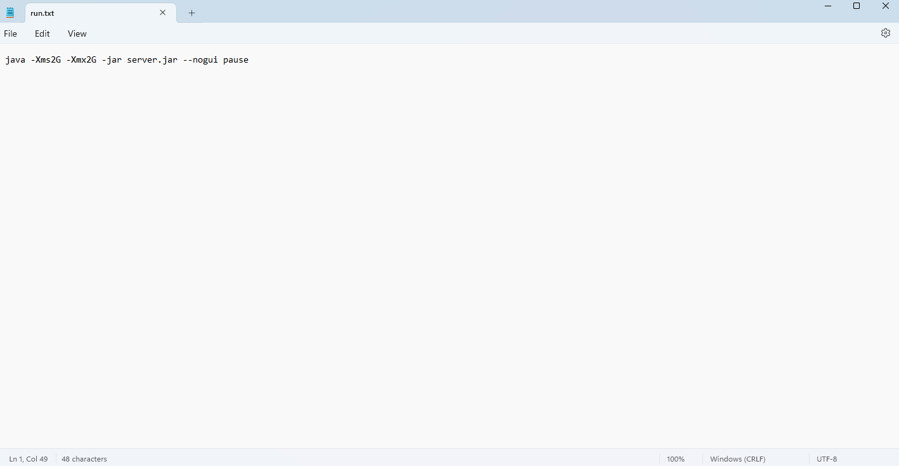
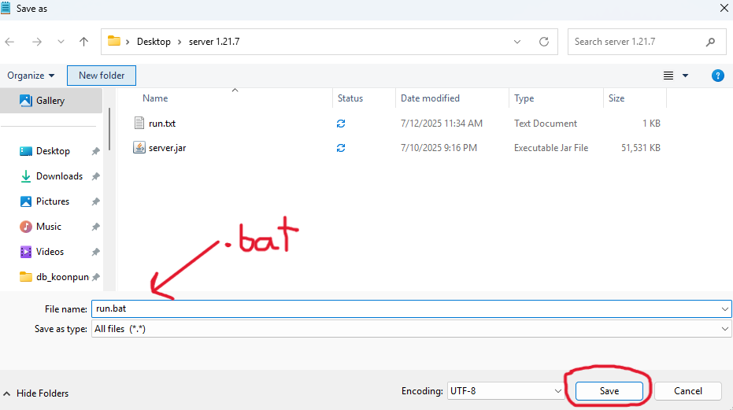
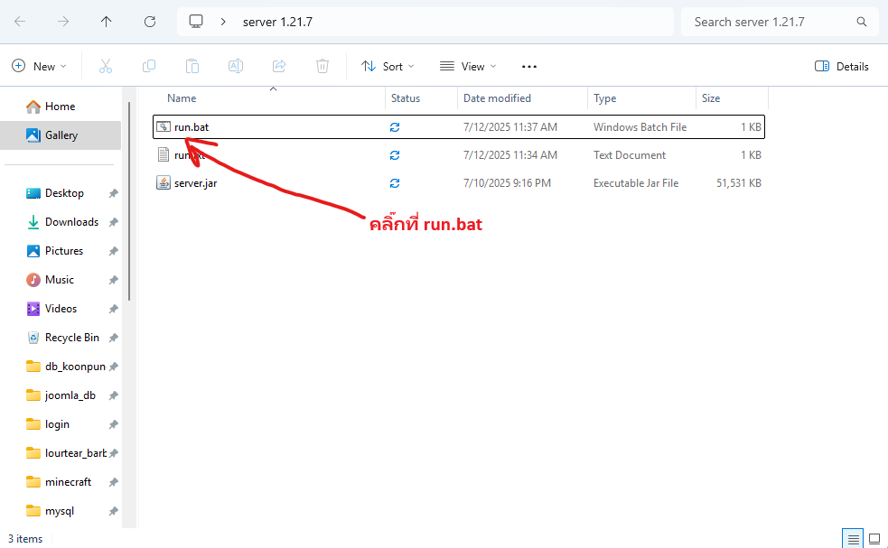
eula=false เป็น eula=true แล้วบันทึก
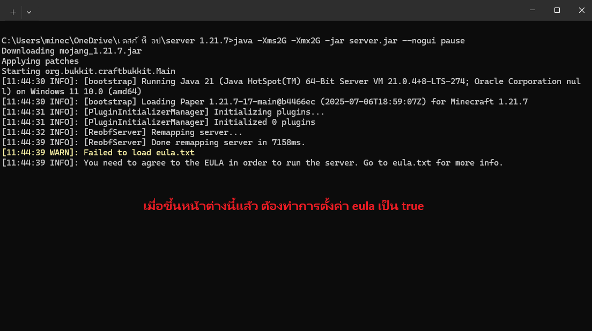
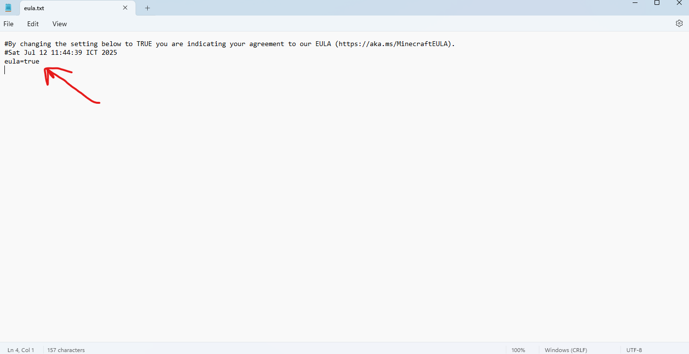
stop ในคอนโซลเพื่อปิดชั่วคราวก่อนตั้งค่า
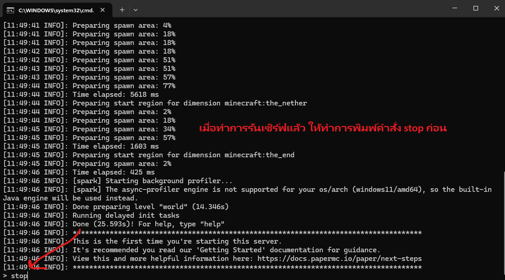
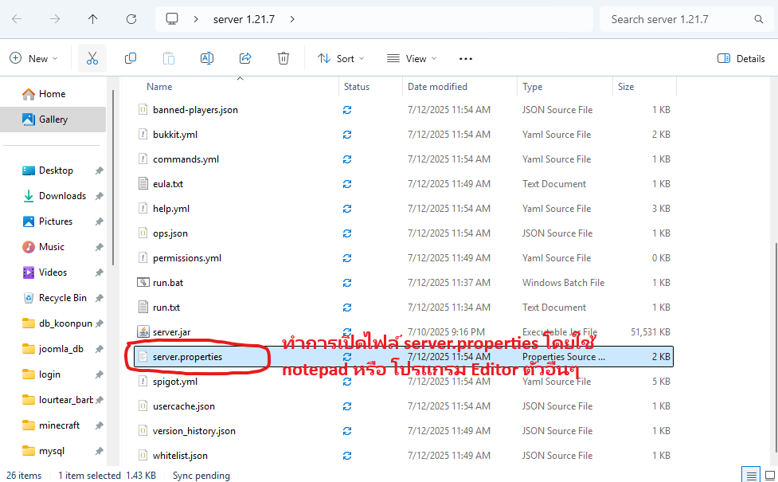
online-mode:
true — เฉพาะบัญชี Premium (แนะนำถ้าเล่นกับเพื่อนที่มีไอดีแท้)false — รองรับไอดีปลอม (Offline) แต่เสี่ยงด้านความปลอดภัย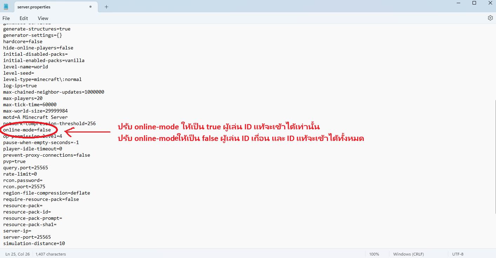
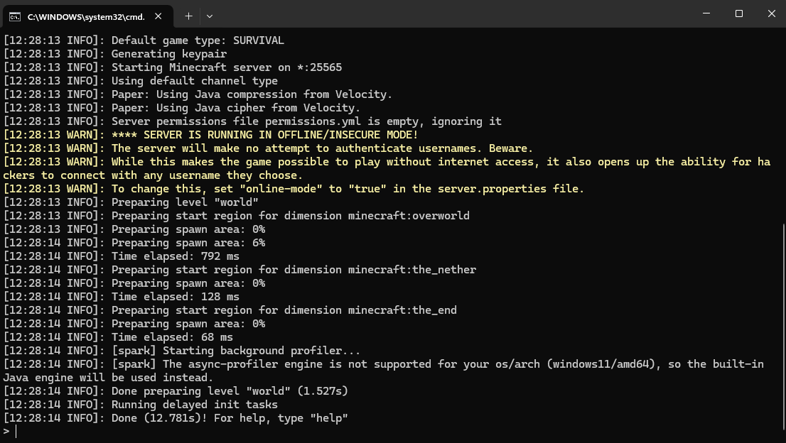
127.0.0.1 หรือ localhost
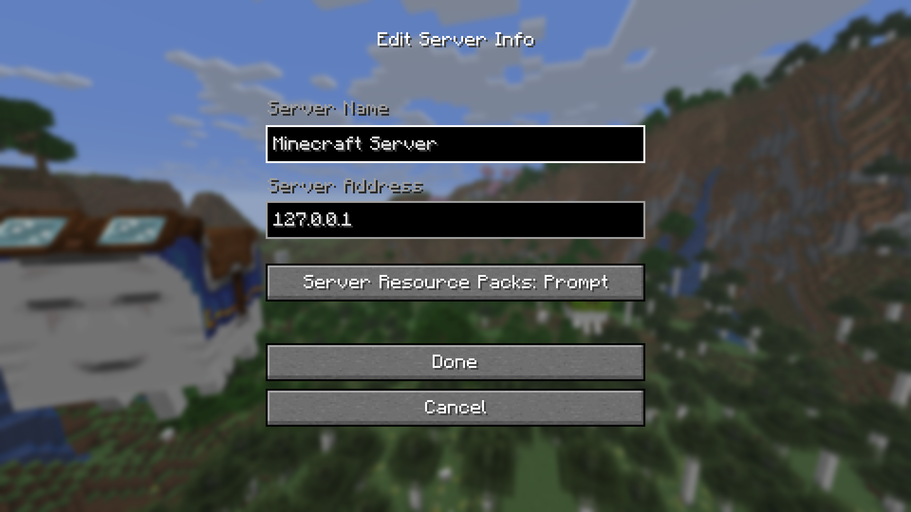
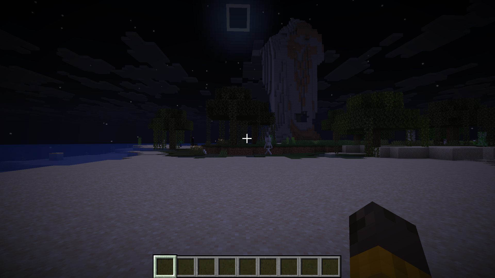
เล่นกับเพื่อนไม่เกิน 5 คน มักจัดสรรให้เซิร์ฟ 2 GB ใน run.bat ถ้ามี 5–10 คนหรือใช้ Plugin แนะนำ 4 GB ขึ้นไป
ขึ้นกับเวอร์ชัน Paper ที่ดาวน์โหลด — ดูตาราง เวอร์ชัน Java ตาม Paper หรือ PaperMC Docs มือใหม่ปี 2026 ที่เลือก Paper 1.20–1.21.11 มักใช้ Java 21 ส่วน Paper 26.1+ ต้องใช้ Java 25
Paper พัฒนาต่อจาก Spigot เน้นประสิทธิภาพและแก้บั๊ก — Plugin ส่วนใหญ่ใช้ร่วมกันได้ มือใหม่แนะนำ Paper
localhost ใช้ได้แค่บนเครื่องคุณ — เพื่อนนอกบ้านต้องใช้ IP สาธารณะหรือเครื่องมือเช่น ngrok
ลงทะเบียนเซิร์ฟฟรีได้ที่ รายการเซิร์ฟเวอร์ Zencrafterly เพื่อให้ผู้เล่นค้นหาและโหวต
ยินดีด้วยครับ! ตอนนี้เซิร์ฟพร้อมบนเครื่องคุณแล้ว หากต้องการให้เพื่อนนอกบ้านเข้าร่วมเล่น ไม่จำเป็นต้อง Port Forward — ใช้คู่มือถัดไปได้เลย
อ่านต่อ: วิธีใช้ ngrok เชื่อมต่อเซิร์ฟเวอร์ Minecraft เล่นกับเพื่อนได้ โดยไม่ต้อง Forward Port